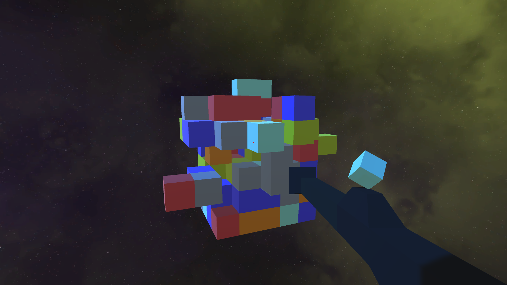

Join UMD Game Developers Club!
About Us
The Game Developers Club is a student run organisation focused on promoting and encouraging personal and professional Game Development at the University of Maryland College Park.
We meet at least once a week on campus and also hold workshops and labs. Students work alone or in groups to complete projects that they demo during the meetings. The club basically serves as a group for members to learn from and collaborate with one another, and as a venue to give and recieve feedback.
If you are interested in joining you are welcome to join our Facebook group, where we post event and potential job/internship information, and our Discord using the links below.
Below you can also read about the different types of events the club hosts.
Club Events

Weekly Meetings
We hold a meeting every week on Thursday in CSIC 2120. If the meeting room differs then we will indicate that on this site or the facebook page.
The first 10-20 minutes of each meeting are dedicated to showing game demos and talking about industry news.
The rest of the meeting will be a group discussion/activity about our club projects or a directed discussion/presentation about some game design concept or game dev tool.
These meeting are often very low key and casual and are more social gatherings that give members a chance to hang out and talk about game developement, or discuss some specific tool or design philosophy.
Labs and Workshops
Officers of the club will host labs and workshops dedicated to teaching and developing game dev skills.
Workshops are themed events where one officer presents and gives a tutorial that shows members how to use a particular game dev tool or concept, and then walks them through how to actually implement it in a sample project.
Workshops will be similar to Computer Science discussions where the officer acts as a TA.
Workshops are hosted once every week or two and will be on the event calender and announced at meetings and on the facebook page.
Labs are more similar to Computer Science office hours, the club reserves a room and officers will be in the room, working on their projects or homework, and will be available to give advice or help other members with their games.
Game Jams and Dashes
The club hosts one game jam per semester and multiple smaller game dashes.
If you are unfamiliar with what a game jam is, it is essentially a hackathon but focused on making a playable game.
A theme is announced at the beginning of the event and then participants have 24 - 48 hours to make a playable prototype of a game that fits the theme.
Game jams are a fun and useful way to learn about game dev and game design and force you to sit down and plan out and implement a simple project.
Game dashes are just game jams but on a smaller scale, allowing members who can't commit to lengthy game jams to have the game jam experience as well.
Completed games from game jams will be hosted in the game jam section of our Games page.
Contact
If you have any questions at all about the club, send us an email at umdgamedevclub@gmail.com, or post your questions in the help channel of the discord. If you want to advertise a job or event related to programming or Game Development feel free to post it on our facebook page.